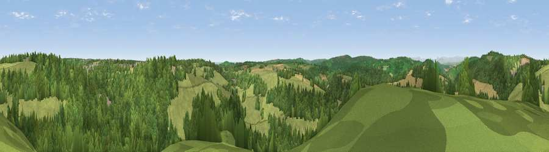

Bircham Wood
#29778 in England · top 65% of its area beats it · near WhitecliffThe view, rendered

A 360° render of this exact spot computed from the terrain model, tree cover and land cover — summer colours, afternoon light, calibrated against photographs of famous viewpoints. Real trees, hedges and buildings will differ in detail.
The panorama
Grey silhouette: terrain skyline in each direction (720 bearings, Earth curvature and refraction included). Dashed green: skyline with trees (+15 m) and buildings (+8 m) as obstacles. Blue strip: how far the ground is visible on each bearing.
Where the view opens
Wedge length = distance to the farthest visible ground on that bearing (vegetation-aware). Rings at 10, 25 and 50 km.
What fills the view
52% woodland · 40% grassland · 6% cropland · 1% built-up
Angular shares of the visible panorama (visual magnitude), not map area. Landscape diversity 0.41 (0–1 Shannon).
Key numbers
More beautiful places nearby
The staircase of upgrades: each row has a higher view potential than everything closer. Driving times are estimates from straight-line distance, calibrated against real road routing — check an actual route before setting out.
| Place | Direction | Drive | Score |
|---|---|---|---|
| Viewpoint near Whitecliff | ESE · 1 km | ~3 min | 46.5 |
| Viewpoint near Staunton | NNW · 2 km | ~6 min | 58.9 |
| Buck Stone | NW · 3 km | ~7 min | 71.0 |
| Viewpoint near Welsh Newton | NW · 8 km | ~17 min | 72.0 |
| Viewpoint near Goodrich | N · 9 km | ~17 min | 74.0 |
| Viewpoint near Ruardean | NE · 10 km | ~19 min | 74.2 |
| Skenchill | NW · 12 km | ~22 min | 75.8 |
| Chase Wood Hill | NNE · 13 km | ~24 min | 77.6 |
51.78490, -2.63817 · source: dobih hill · position refined by local search. Computed location — check access rights before visiting.